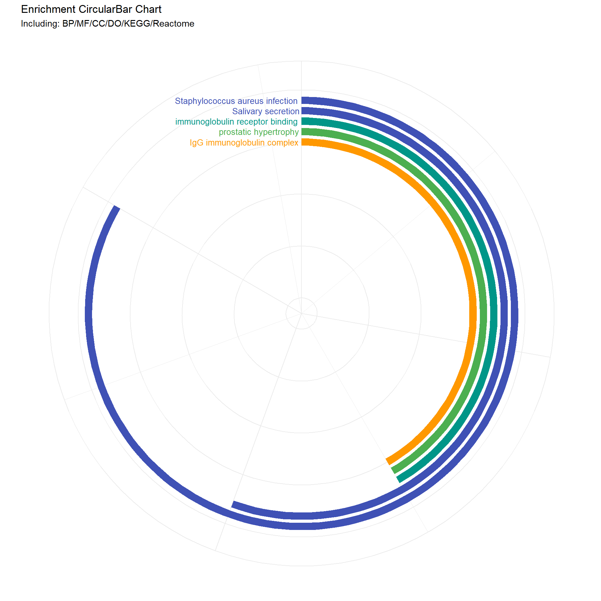
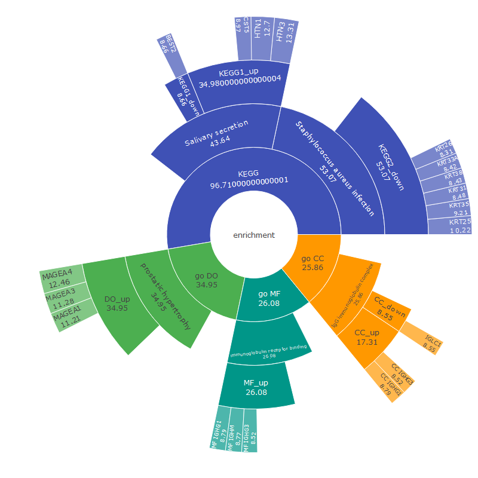

This script primarily carries out the reading and merging of transcriptomic data from tumor and normal samples, and processes this data through logarithmic transformation. Subsequently, it reads and handles differentially expressed gene data, performing multiple biological enrichment analyses, including biological processes, molecular functions, cellular components, KEGG pathways, disease ontology, and Reactome pathways. Finally, the script filters specific enrichment results and uses ggplot2 to create a circular bar chart to visualize these results, effectively displaying differences in gene expression across various categories. This provides valuable insights for biomedical research, especially in exploring the expression differences between tumors and normal tissues.
tumor <-readRDS("../test_TransProR/generated_data1/removebatch_SKCM_Skin_TCGA_exp_tumor.rds")normal <-readRDS('../test_TransProR/generated_data1/removebatch_SKCM_Skin_Normal_TCGA_GTEX_count.rds')# Merge the datasets, ensuring both have genes as row namesall_count_exp <-merge(tumor, normal, by ="row.names")all_count_exp <- tibble::column_to_rownames(all_count_exp, var ="Row.names") # Set the row names# Drawing dataall_count_exp <-log_transform(all_count_exp)
# Convert from SYMBOL to ENTREZID for convenient enrichment analysis later. It's crucial to do this now as a direct conversion may result in a reduced set of genes due to non-one-to-one correspondence.# DEG_deseq2# Retrieve gene listgene <-rownames(DEG_deseq2)# Perform conversiongene =bitr(gene, fromType="SYMBOL", toType="ENTREZID", OrgDb="org.Hs.eg.db")
'select()' returned 1:many mapping between keys and columns
Warning in bitr(gene, fromType = "SYMBOL", toType = "ENTREZID", OrgDb =
"org.Hs.eg.db"): 43.37% of input gene IDs are fail to map...
# Remove duplicates and mergegene <- dplyr::distinct(gene, SYMBOL, .keep_all=TRUE)# Extract the SYMBOL column as a vector from the first datasetsymbols_vector <- gene$SYMBOL# Use the SYMBOL column to filter corresponding rows from the second dataset by row namesDEG_deseq2 <- DEG_deseq2[rownames(DEG_deseq2) %in% symbols_vector, ]head(DEG_deseq2, 5)
Diff_deseq2 <-filter_diff_genes( DEG_deseq2, p_val_col ="pvalue", log_fc_col ="log2FoldChange",p_val_threshold =0.01, log_fc_threshold =8 )# First, obtain a list of gene names from the row names of the first datasetgene_names <-rownames(Diff_deseq2)# Find the matching rows in the second dataframematched_rows <- all_count_exp[gene_names, ]# Calculate the mean for each rowaverages <-rowMeans(matched_rows, na.rm =TRUE)# Append the averages as a new column to the first dataframeDiff_deseq2$average <- averagesDiff_deseq2$ID <-rownames(Diff_deseq2)Diff_deseq2$changetype <-ifelse(Diff_deseq2$change =='up', 1, -1)# Define a small threshold valuesmall_value <- .Machine$double.xmin# Before calculating -log10, replace zeroes with the small threshold value and assign it to a new columnDiff_deseq2$log_pvalue <-ifelse(Diff_deseq2$pvalue ==0, -log10(small_value), -log10(Diff_deseq2$pvalue))# Extract the expression data corresponding to the differentially expressed genesheatdata_deseq2 <- all_count_exp[rownames(Diff_deseq2), ]#head(heatdata_deseq2, 1)
kegg.out.outdata_deseq2 <-as.data.frame(kegg.out_deseq2)# Uncomment to export the data, which are in ENTREZID format# write.csv(kegg.out.outdata_deseq2, "E:/kegg.out.outdata.csv")##### Convert numeric Entrez gene IDs or Ensembl gene IDs from above code to symbolslibrary(org.Hs.eg.db)kegg.out1_deseq2 =as.data.frame(kegg.out_deseq2)ENTREZID =strsplit(kegg.out1_deseq2$geneID, "/")symbol =sapply(ENTREZID, function(x) { y =bitr(x, fromType ="ENTREZID", toType ="SYMBOL", OrgDb ="org.Hs.eg.db")# In case of multiple matches, take the first one y = y[!duplicated(y$ENTREZID), -1] y =paste(y, collapse ="/")})
'select()' returned 1:1 mapping between keys and columns
'select()' returned 1:1 mapping between keys and columns
'select()' returned 1:1 mapping between keys and columns
kegg.out1_deseq2$geneID = symbolkegg.out1.outdata_deseq2 <-as.data.frame(kegg.out1_deseq2)# Uncomment to export the converted data# write.csv(kegg.out1.outdata_deseq2, "E:/fruit/kegg.out1.outdata.csv")head(kegg.out.outdata_deseq2, 5)
# Suppose you have a dataframe named data and a list of descriptions you want to filterdescriptions_to_filter <-c("immunoglobulin production", "B cell mediated immunity")filtered_data_BP <-extract_descriptions_counts(erich.go.BP.outdata_deseq2, descriptions_to_filter, "#009688")print(filtered_data_BP)
Description Count color
GO:0002377 immunoglobulin production 34 #009688
GO:0019724 B cell mediated immunity 29 #009688
descriptions_to_filter <-c("Keratinization", "Formation of the cornified envelope")filtered_data_Reactome <-extract_descriptions_counts(erich.go.Reactome.outdata_deseq2, descriptions_to_filter, "#ffc107")print(filtered_data_Reactome)
Description Count color
R-HSA-6805567 Keratinization 50 #ffc107
R-HSA-6809371 Formation of the cornified envelope 16 #ffc107
# Function to create the circular bar chartenrich_circo_bar1 <-function(data_list, num_dummy) {# Combine data and arrange by Count combined_data <- dplyr::bind_rows(data_list) combined_data <- combined_data %>% dplyr::arrange(dplyr::desc(.data$Count)) %>% dplyr::mutate(id = dplyr::row_number())# Add dummy rows to create empty space in the center num_dummy <- num_dummy # Number of dummy rows dummy_data <-data.frame(Description =rep("dummy", num_dummy),Count =rep(0, num_dummy),color =rep("#FFFFFF", num_dummy) # White color for dummy bars ) dummy_data <- dummy_data %>% dplyr::mutate(id =max(combined_data$id) + dplyr::row_number())# Combine real and dummy data combined_data <- dplyr::bind_rows(combined_data, dummy_data)# Mutate Description to a factor with levels in the order of appearance combined_data <- combined_data %>% dplyr::mutate(Description =factor(.data$Description, levels =unique(.data$Description)))# Set fill colors, including dummy color fill_colors <-c(combined_data$color[match(levels(combined_data$Description), combined_data$Description)], "#FFFFFF")# Calculate maximum values for limits max_count <-max(combined_data$Count) + (max(combined_data$Count) /5) max_id <-max(combined_data$id) +1.5# Create plot p <- ggplot2::ggplot(combined_data, ggplot2::aes(x = .data$id, y = .data$Count, fill = .data$Description)) + ggplot2::geom_bar(stat ="identity", width =0.7) + ggplot2::geom_text(ggplot2::aes(x = .data$id, y =0, label =ifelse(.data$Description =="dummy", "", as.character(.data$Description)), color = .data$Description), hjust =1.03, size =3.5) +# Remove color assignment from here ggplot2::scale_fill_manual(values = fill_colors, guide ="none") + ggplot2::scale_color_manual(values = fill_colors, guide ="none") +# Assign colors to text ggplot2::scale_y_continuous(expand =c(0, 0), limits =c(0, max_count), position ="right") + ggplot2::scale_x_reverse(expand =c(0, 0), limits =c(max_id, -0.1)) +# Reverse the x-axis ggplot2::coord_polar(theta ="y", start =0) + ggplot2::labs(title ="Enrichment CircularBar Chart", subtitle ="Including: BP/MF/CC/DO/KEGG/Reactome") + ggplot2::theme_minimal() + ggplot2::theme(plot.background = ggplot2::element_rect(fill ="white", color ="white"), axis.title = ggplot2::element_blank(), axis.text = ggplot2::element_blank())return(p)}my_sunburst1 <-function (test, custom_colors =NULL, ...) { test <-as.data.frame(test)if (length(unique(test[, 1])) >1) { test <-cbind(Root =" ", test) } nc <-ncol(test)if (nc <3) stop("as least 3-columns dataframe")if (!is.numeric(test[, nc])) stop("the last column must be numeric")lib_ps("plotly", library =FALSE) target <- source <- weight <-NULL links <-data.frame()for (i in1:(nc -2)) { tmp <- test[, c(i, i +1, nc)]colnames(tmp) <-c("source", "target", "weight") tmp <- dplyr::group_by(tmp, source, target) %>% dplyr::summarise(weight =sum(weight), .groups ="keep") links <-rbind(links, tmp) }if (is.null(custom_colors)) {# Use default colors if no custom colors provided fig <- plotly::plot_ly(labels = links$target, parents = links$source, values = links$weight, text = links$weight, type ="sunburst", ...) } else {# Use custom colors fig <- plotly::plot_ly(labels = links$target, parents = links$source, values = links$weight, text = links$weight, type ="sunburst", marker =list(colors = custom_colors), ...) } fig}
11.6.3 bar
# Call the function to create the plotcombined_and_visualized_data <-enrich_circo_bar1(data_list, 15)# Print the plotprint(combined_and_visualized_data)

11.6.4 sunburst
# Create the sunburst plot with custom colorsfig <-my_sunburst1(test1, custom_colors = colors)# Display the plotfig
11.6.5 combined_plot
# Convert ggplot to imagecircular_bar_image <-image_graph(width =1000, height =1000, res =96)print(combined_and_visualized_data)dev.off()
png
2
# Save the sunburst chart as HTML and convert it to an imagehtml_file <-tempfile(fileext =".html")png_file <-tempfile(fileext =".png")saveWidget(fig, html_file, selfcontained =TRUE)webshot(html_file, png_file, vwidth =800, vheight =800, cliprect =c(0, 0, 800, 800))

# Read the saved imageimg <-image_read(png_file)# Create a circular maskmask <-image_draw(image_blank(800, 800, color ="none"))symbols(400, 400, circles =400, inches =FALSE, add =TRUE, fg ="grey50", bg ="grey50")dev.off()
png
2
# Apply the mask to generate a circular imageimg_circular <-image_composite(img, mask, operator ="copyopacity")# Convert the generated circular bar chart and circular sunburst chart to ggplot objectscircular_bar_plot <-ggdraw() +draw_image(circular_bar_image, scale =1)sunburst_plot <-ggdraw() +draw_image(img_circular, scale =0.5)# Overlay the sunburst chart at the center of the circular bar chartcombined_plot <- circular_bar_plot +draw_plot(sunburst_plot, x =-0.02, y =-0.02, width =1, height =1)# Print the combined plotprint(combined_plot)